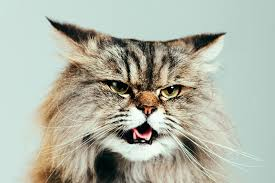

Project 01 :
Cats have very soft coats of fur, which makes them look like soft rugs, and once you pet them, you don't want to stop because they are so soft. My pet cat loves to play with my family and me. My pet cat is the most attached to the person who gives him or her treats. All my friends and relatives also love my pet cat.
Project 02 :
Cats have very soft coats of fur, which makes them look like soft rugs, and once you pet them, you don't want to stop because they are so soft. My pet cat loves to play with my family and me. My pet cat is the most attached to the person who gives him or her treats. All my friends and relatives also love my pet cat.
Project 03 :
Cats have very soft coats of fur, which makes them look like soft rugs, and once you pet them, you don't want to stop because they are so soft. My pet cat loves to play with my family and me. My pet cat is the most attached to the person who gives him or her treats. All my friends and relatives also love my pet cat.
Project 04 :
Cats have very soft coats of fur, which makes them look like soft rugs, and once you pet them, you don't want to stop because they are so soft. My pet cat loves to play with my family and me. My pet cat is the most attached to the person who gives him or her treats. All my friends and relatives also love my pet cat.
Project 05 :
Cats have very soft coats of fur, which makes them look like soft rugs, and once you pet them, you don't want to stop because they are so soft. My pet cat loves to play with my family and me. My pet cat is the most attached to the person who gives him or her treats. All my friends and relatives also love my pet cat.

Project 06 :
Cats have very soft coats of fur, which makes them look like soft rugs, and once you pet them, you don't want to stop because they are so soft. My pet cat loves to play with my family and me. My pet cat is the most attached to the person who gives him or her treats. All my friends and relatives also love my pet cat.